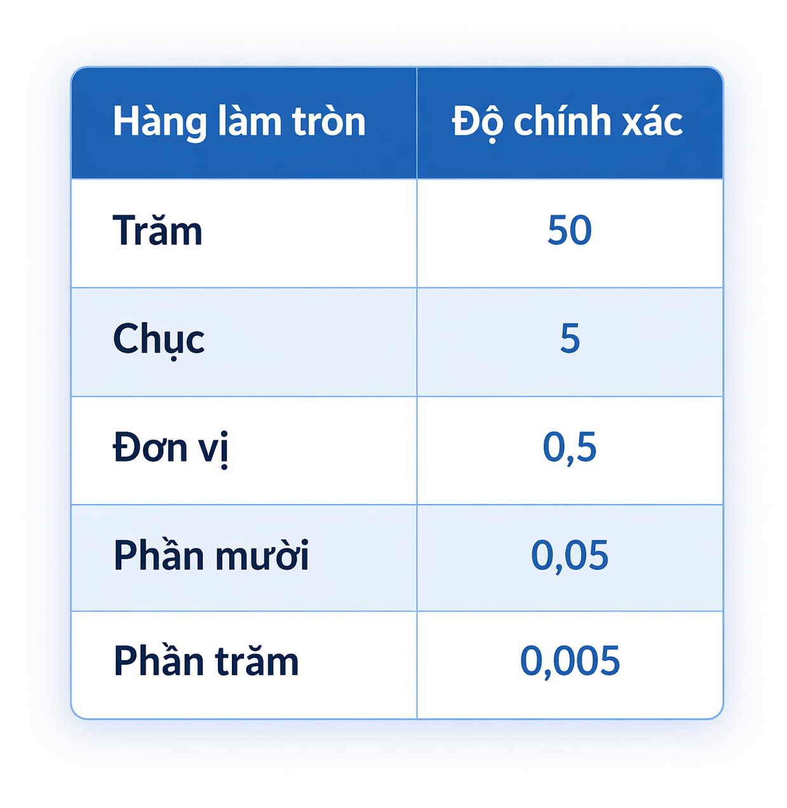

📘 Bài 5: Làm quen với số thập phân vô hạn tuần hoàn
📖 1. Thứ tự thực hiện các phép tính
• Số thập phân vô hạn tuần hoàn là số thập phân có phần thập phân lặp lại và phần lặp lại vô hạn.
• Chu kì của số thập phân vô hạn tuần hoàn là phần được lặp lại vô hạn lần.
• Số thập phân hữu hạn là số thập phân như 0,8; 1,25; …
🧠 Chú ý:
- Mọi số hữu tỉ đều viết được dưới dạng số thập phân hữu hạn hoặc vô hạn tuần hoàn.
✏️ 2. Làm tròn số thập phân căn cứ vào độ chính xác cho trước
• Khi làm tròn số đến một hàng nào đó, kết quả làm tròn có độ chính xác bằng một nửa đơn vị hàng làm tròn.
🧠 Chú ý:
- Muốn làm tròn số thập phân với độ chính xác cho trước, ta có thể xác định hàng làm tròn thích hợp bằng cách sử dụng bảng dưới đây.
